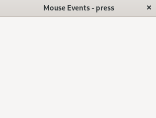

(update:2025/2/1)
マウスの各ボタンを押したときの動作を指定します。
| set_button( 引数 ) | |
|---|---|
| 引数 | 意味 |
| GDK_BUTTON_PRIMARY | 左ボタン |
| GDK_BUTTON_MIDDLE | スクロールボタン |
| GDK_BUTTON_SECONDARY | 右ボタン |
| signal_handlerの引数 | |
|---|---|
| 書式 | 意味 |
| int n_press | 1:シングルクリック 2:ダブルクリック 3:トリプルクリック |
| double x | マウスのｘ座標 |
| double y | マウスのｙ座標 |
#include <gtkmm.h>
#include <iostream>
class MyWindow : public Gtk::Window
{
public:
MyWindow();
virtual ~MyWindow() = default;
private:
// Signal handlers:
void mouse_Left_pressed(int n_press, double x, double y);
void mouse_Middle_pressed(int n_press, double x, double y);
void mouse_Right_pressed(int n_press, double x, double y);
};
MyWindow::MyWindow()
{
set_title( "Mouse Events - press" );
set_default_size( 320, 240 );
Glib::RefPtr<Gtk::GestureClick> m_window_click = Gtk::GestureClick::create();
m_window_click->set_button( GDK_BUTTON_PRIMARY );
m_window_click->signal_pressed().connect(
sigc::mem_fun( *this, &MyWindow::mouse_Left_pressed ));
add_controller( m_window_click );
m_window_click = Gtk::GestureClick::create();
m_window_click->set_button( GDK_BUTTON_MIDDLE );
m_window_click->signal_pressed().connect(
sigc::mem_fun( *this, &MyWindow::mouse_Middle_pressed ));
add_controller( m_window_click );
m_window_click = Gtk::GestureClick::create();
m_window_click->set_button( GDK_BUTTON_SECONDARY );
m_window_click->signal_pressed().connect(
sigc::mem_fun( *this, &MyWindow::mouse_Right_pressed ));
add_controller( m_window_click );
}
void MyWindow::mouse_Left_pressed(int n_press, double x, double y)
{
std::cout << "Left pressed"
<< ", " << n_press << ", " << (int)x << ", " << (int)y << std::endl;
}
void MyWindow::mouse_Middle_pressed(int n_press, double x, double y)
{
std::cout << "Middle pressed"
<< ", " << n_press << ", " << (int)x < ", " < (int)y << std::endl;
}
void MyWindow::mouse_Right_pressed(int n_press, double x, double y)
{
std::cout << "Right pressed"
<< ", " << n_press << ", " << (int)x << ", " << (int)y << std::endl;
}
int main(int argc, char* argv[])
{
auto app = Gtk::Application::create( "gtkmm4.example" );
return app->make_window_and_run<MyWindow>( argc, argv );
}
| Mouse event | |
|---|---|
| Console | Window |
|
$ Left pressed, 1, 80, 76 $ Right pressed, 1, 80, 76 $ Middle pressed, 1, 80, 76 $ Left pressed, 2, 193, 100 $ Left pressed, 3, 193, 100 |
 |